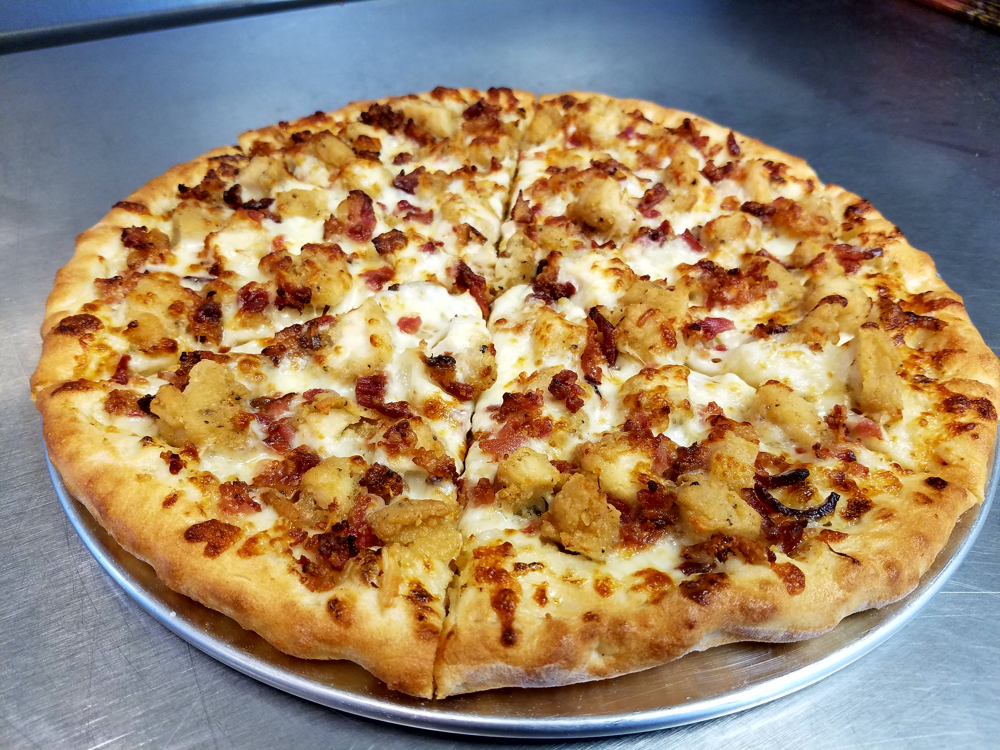

Pizza recipe

Description
Pizza is a dish made best in buffalo, NY
Ingredients
Dough
Sauce
Cheese
Pepperoni
Steps to make
- Place your pizza stone or steel (or a sheet of aluminum foil) directly on the grill grates. Close cover and preheat the grill on high heat.
- Once the grill is heated, use a pizza peel that is dusted with flour or cornmeal to slide your assembled pizza onto your stone or foil. Close the grill cover.
- Grill the pizza until the crust is browned, about 10 to 12 minutes. Use either a pair of tongs or a pizza peel to remove the pizza from the grill, and slice.
Thats how you make some imperial pizza at home